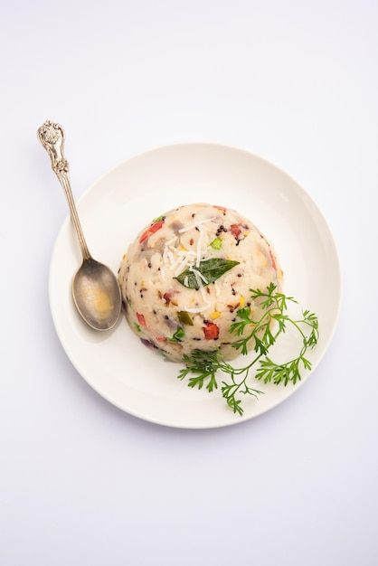

Ingredients
- 1 cup semolina (rava/sooji)
- 1 onion (chopped)
- 1-2 green chilies (chopped)
- 1 tsp mustard seeds
- Few curry leaves
- 2 tbsp oil or ghee
- Salt to taste
- 2 cups water
- Coriander leaves for garnish
Instructions
- Dry roast semolina in a pan until light golden. Keep aside.
- In another pan, heat oil. Add mustard seeds, curry leaves, and chilies.
- Add onions and sauté until translucent.
- Pour in water and salt. Bring to a boil.
- Slowly add semolina while stirring continuously to avoid lumps.
- Cook until water is absorbed. Garnish with coriander leaves and serve hot.